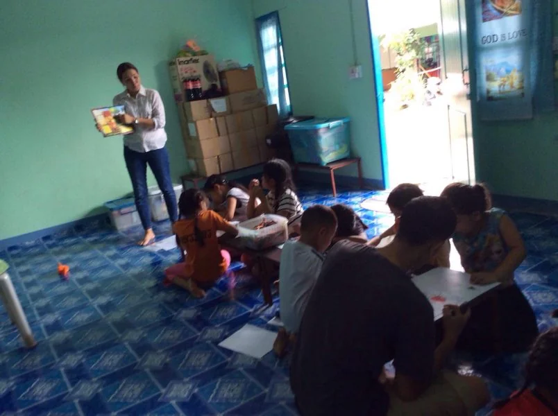

English Program
A weekly English class for children from elementary through high school age. In this community, English is not an enrichment activity, it is the difference between being employable and being exploitable.
A ministry of YWAM Chiang Mai
A community centre in Chiang Mai for Shan families, also known as Tai Yai. English classes, a Bible study, a church, and a discipleship school rebuilt to fit around a working week.

The need
The Shan are a people group from Burma, where they face social and political injustice and religious persecution. Many have crossed into Thailand for work, and many are here in Chiang Mai and the towns around it.
Crossing a border does not end the problem, it changes its shape. Work without documents means work without protection, and that leaves Shan families exposed to exploitation as cheap labour and to the sex trade. Children in that situation are the first to lose their schooling and the last to be noticed missing from it.
The solution
Shan Outreach Ministries works among the Shan communities of Chiang Mai and the surrounding areas from a community centre. Four things run out of it, and all four are weekly rather than occasional, which is the part that matters most in a community where adults have often come and gone.
A weekly English class for children from elementary through high school age. In this community, English is not an enrichment activity, it is the difference between being employable and being exploitable.
Weekly, for teenagers who want to grow in their knowledge and love of God, study the Word together and worship.
Shan believers, new and long standing, meet to worship, grow and eat together. Sundays at the centre, and often during the week whenever people are free.
The Community DTS
YWAM's Discipleship Training School runs five months full time. That is a reasonable ask of a nineteen year old with a gap year and an unreasonable one of a father working six days a week to keep a family housed without papers.
So the centre teaches the principles of a DTS in a shorter format suitable for working class families, and invites the whole community rather than a selected intake. It is the one genuinely inventive thing on this page. Nothing about the content is watered down; what changes is the assumption that discipleship requires you to stop earning.

Get involved
We are not going to publish a wish list of roles for this ministry that we cannot stand behind. What the centre needs changes with who is currently on the team and which families are currently coming, and the honest answer is that you should ask.
If you teach, coach, or have time on a weekday evening, that is a good place to start the conversation. Contact goes through the base office rather than direct to the centre.
Contact
Enquiries about Shan Outreach go through the base office, which will pass them on. Email the base and mark it for Shan Outreach.
P.O. Box 113 CMU, Chiang Mai 50202, Thailand.
Follow along
Get social
Shan Outreach has no site or social accounts of its own. Base news, which includes this ministry, goes out on Facebook and Twitter.